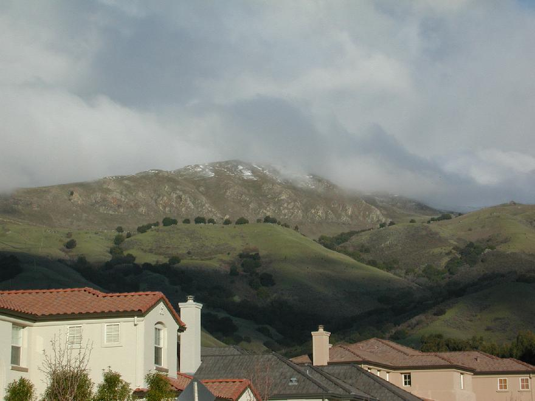

Up: Cool
Stuff Next: Hike starting from
Sunol
Hikes up Mission Peak, Fremont CA
Or, Far More than Thirty-Six Views of Mission Peak

Mission Peak with snow from Stanford Avenue, February 12,
2001.
Photographic Guides
to the Ascent
Mission Peak Trailmap
Here is a map of the
trails on Mission Peak, a popular hiking spot in Fremont, CA.
The map was made from the GPS tracklogs of separate hikes up
to the summit from the Sunol, Stanford Avenue, Ohlone and Ed
Levin trailheads. Much more technical information is
available on our GPS page.
Mission Peak Trail Profiles
Here are some topographic profiles of the trails up Mission
Peak. These profiles were generated from tracklogs and
waypoints made using a Garmin GPS receiver with
differential correction. The elevations were recorded by
hand, since the Garmin 12XL does not include elevations as
part of waypoint data. The lateral coordinates are good to
±2m, while the elevation data are
somewhat less accurate. The distances displayed are the
integrated distance along the trail as obtained from the
tracklog, which is taken at much higher spatial resolution
than the waypoint data.
Oral History of Mission Peak
The interview with Roan
McClure, former Mission Peak rancher was conducted on November
24, 2006. All audio files are in the Ogg Vorbis format. This map shows the location on Mission Peak of
the sites mentioned by McClure.
- Peak
Meadow Ranch buildings (8.9 MB, running time 8:18)
- History
of private land ownership on Mission Peak, (5.0 MB, running
time 4:49)
- Daily
life on Mission Peak (2.5 MB, running time 2:20)
- History
of hiking on Mission Peak (5.1 MB, running time 4:53)
- Vineyards
and orchards on Mission Peak (3.8 MB, running time 3:38)
- True
story of the Mission Peak goats (3.3 MB, running time
2:59)
- The
EBRPD and the Peak Meadow Ranch (4.5 MB, running time
3:45)
- Mission
Peak summit monument (3.8 MB, running time 3:34)
- How the
Horse Heaven Trail got its name (1.8 MB, running time
1:43)
- Spanish,
Ohlone and earthquakes (3.8 MB, running time 3:30)
- Mission
Peak's three swimming pools (3.7 MB, running time 3:21)
Written History of Humans in the Mission Peak
Area
- The story of the Moore/McClure
family, early settlers on Mission Peak, as written by Roan
McClure. Also read an article about the
McClure Ranch by Dennis Rockstroh of the San Jose Mercury News.
.
- A highly recommended book is the well-illustrated
Washington Township: A Pictorial History. See photos of
the McClure/Moore swimming pools atop Mission Peak, early
buildings in Mission San Jose, and the McClure's Mission Peak
monument. The book is available through Washington
Hospital (scroll to bottom).
- Courtesy of Dennis Rockstroh, read the lowdown on the Mission Peak
wild
goats. (36K with image) As of summer 2002, there are two goats
left.
- Also by Dennis Rockstroh, read about the residence of the
Stanford family at Warm Springs, and its
consideration as a site for Stanford University
- Story of The Cohen
Hotel: Mission Peak as a resort area. Written by Dennis
Rockstroh of the San Jose
Mercury News. Find out how Warm Springs got its name. (5K)
- Much more information is available in Two
Centuries at Mission San Jose by Philip Holmes. Get
this book at your local
Fremont Bank branch. A summary
of Holmes' research is available on-line.
- The Fremont Museum of Local History has a 1853
photo of Mission San Jose on their web page plus
information on
Hayward Fault seismology
- California Missions has a history
of Mission San Jose
- The Tri-City
Voice often has articles by Philip Holmes about local
history, for example about the early history of
Osgood/Driscoll Road.
- A little history about the Weibel
and Stanford Wineries at the foot of Mission Peak
- Wings of Rogallo notes, "From Mission
Peak, Dave Kilborne became the first pilot to foot-launch and
soar a hang-glider in 1972." So on top of everything else,
Mission Peak is the birthplace of hang-gliding.
Natural History
- Oakland Museum's map
of Mission Peak watershed
- Math/Science Nucleus has a
description of the area that focuses on Mission Creek.
Mission Peak is the headwater of most of Fremont's streams.
Find out how water flows from Mission Peak into Fremont's Lake
Elizabeth.
- Identify Mission Peak wildflowers using an excellent
identification
key put up by experts at Henry Coe State Park. Identify
virtually any local plant using the excellent resources of
CalFlora, a web page
that is as all-inclusive as it is easy to use.
- Identify common lichens and learn about
their
biology at a website with remarkably lovely photos. The
stuff hanging from trees that we all call "Spanish moss" is
really lace lichen (Ramalina menziesii) and was used by the
Ohlone for baby diapers.
Lace lichen is the fastest-growing species in North America
according to a recent excellent
article by the same authors in Bay
Nature magazine.
- Math-Science Nucleus has excellent fields guides to local
birds,
amphibians, trees,
grasses,
shrubs
and flowers, aquatic
plants, fossils
and
geology. The fossils include not just the usual
molluscs but mastodons and saber-toothed tigers. Well done
and highly recommended!
- More about the extensive set of "Irvingtonian"
fossils found at the base of Mission Peak, including a list
of the species found
- List of Mission Peak birds.
- Mission
Creek has its headwaters on Mission Peak.
- Can you imagine the East Bay hills without oak trees? Me
neither. Consider joining the California Oak
Foundation.
- View a detailed
report (including several geological maps) concerning the
famous Mission Peak landslide. Highlights: "Mission
Peak and Mission Ridge are comprised of a resistant plug of
overturned Briones sandstone which appears to have been thrust
upward between eastern and western traces of the Mission fault
. . . The site lies within a tectonically active zone. Mission
Ridge appears to be rapidly lifting along the Mission
fault. This rapid uplift of the Briones sandstone creates
over-steepened slopes with an abundant supply of fractured
blocky rock, available to cascade over 1,000 feet
downslope. . . ." Fascinatingly the Mission fault passes right
near the summit, creates visible offsets along Aliso Creek, and
transmits slip between the Calaveras and Hayward Faults.
- USGS page about
Creepmeters on the Hayward Fault, including one
on Osgood Road
- Four of Fremont's landmark
trees are at 2015 Stanford Ave., right near the parking lot
of the staging area.
Getting Out Guide
Other Useful Information
- View a
satellite image of the Mission Peak summit using the
Microsoft's terraserver site. The summit is at center-right
while the Peak and Horse Heaven Trails are clearly seen on
the left. The Eagle Trail is at right. The McClure Ranch
home is at the bottom center. Mysteriously the image is
labeled "San Jose, California." (What did you expect from
Microsoft?) Thanks to Jerry Andrews for the suggestion to
include this link.
- What's the Mission Peak weather right now? Find out using
your choice of webcams: from Newark (I
would guess) or from the Warm Springs section of
Fremont or Mission
Ridge webcamfrom the mountain itself.
- Yahoo has a Mission
Peak webpage that seems to indicate that Mission Peak is in
San Francisco. Fascinatingly we learn that Mission Peak's
street address is 43600 Mission Blvd. I never would have
thought to ask.
Acknowledgements
Wolfgang did most of the work,
including lugging the differential DGPS receiver with its
lead-acid battery all the way up to the summit several times.
Thanks also to Lou Terminello, Bob Teeter,
Michelle Geary, Kevin Lahey and Dave
Brock for accompanying us on these hikes.
Next: Hike
starting from Sunol Up: Cool Stuff

 .
.
alison@exerciseforthereader.org
(Alison Chaiken)
..
{kind=link}